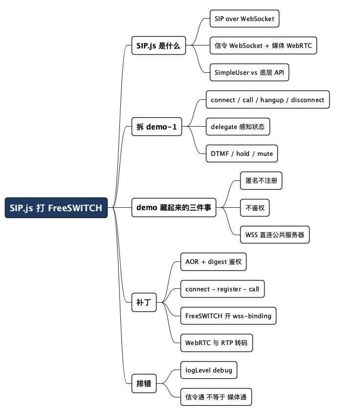

用 SIP.js 从浏览器打电话到 FreeSWITCH
Posted on 五 11 9月 2026 in Tech
| Abstract | 用 SIP.js 从浏览器打电话到 FreeSWITCH |
|---|---|
| Authors | Walter Fan |
| Category | Tech |
| Version | v1.0 |
| Updated | 2026-09-11 |
| License | CC-BY-NC-ND 4.0 |
大纲
展开看看
- SIP.js 是什么：一个纯前端的 SIP over WebSocket 库，让浏览器变成一台软电话
- 拆 demo-1：官方 demo 的四步——connect / call / hangup / disconnect，全落在一个
SimpleUser上 - demo 帮你藏起来的三件事：匿名不注册、不用鉴权、WSS 直连公共服务器
- 打到 FreeSWITCH 要补什么：AOR、digest 鉴权、注册，还有一座 WebSocket 到 SIP 的桥
- FreeSWITCH 侧配置：mod_sofia 的 WSS profile 与一个测试分机
- 完整可运行代码 + 排错清单
浏览器早就能打电话了。不用装插件，不用 Flash，一段 JavaScript 就能让一个网页拨通真实的电话号码——底层是 WebRTC 传媒体，SIP over WebSocket 传信令。SIP.js 就是干这件事的库：由 OnSIP 维护，把 SIP 协议栈整个搬进了浏览器。
它的官方 demo 极其友好。打开 demo/demo-1.html，点四下按钮，你就听到一个回声测试的声音了。友好到有点误导——因为那套 demo 打的是 OnSIP 自己的一台匿名公共服务器，不注册、不鉴权、WebSocket 直连。等你把目标换成自己的 FreeSWITCH，四个按钮一个都点不通。
这篇文章干两件事：先把 demo-1 逐行拆开，看清 SIP.js 到底怎么用；再补上 demo 替你藏起来的三件事——注册、鉴权、还有一座从 WSS 到 SIP 的桥，让浏览器真正打进 FreeSWITCH。假设你知道 SIP 大概是个什么协议（INVITE、REGISTER 这些词不陌生），但没在浏览器里跑过。
一、SIP.js 是什么：把软电话塞进浏览器
传统的 SIP 软电话（比如 Zoiper、Linphone）是桌面程序，直接用 UDP/TCP 发 SIP 信令。浏览器做不到这一点——它不给你裸 socket。于是有了 RFC 7118：SIP over WebSocket，把 SIP 消息塞进 WebSocket 帧里传。
SIP.js 就是这套协议在浏览器里的完整实现。它管两条线：
- 信令：用 WebSocket（通常是
wss://）和 SIP 服务器收发 INVITE、REGISTER、BYE 这些消息。 - 媒体：用浏览器原生的 WebRTC（
RTCPeerConnection）传语音和视频，音频最后接到一个<audio>元素上。
这里有个关键点值得先记住：浏览器发出的媒体一定是 WebRTC（DTLS-SRTP 加密、走 ICE）。而 FreeSWITCH 默认那些分机用的是普通 RTP。这条鸿沟后面要专门填。
SIP.js 分两层 API：底层的 UserAgent、Inviter、Registerer，给你完全的控制权；上层的 SimpleUser，把最常见的"连接—打电话—挂断"包装成几个方法。官方 demo 用的全是 SimpleUser,咱们也从它入手。
二、逐行拆 demo-1
先说清楚一件容易踩的事：demo-1.html 里几乎没有逻辑，它只是一堆按钮加一个 <audio>，真正的代码在同目录的 demo-1.ts（编译成 dist/demo-1.js 后被 HTML 引入）。所以想看懂 demo，看的是那个 TypeScript 文件。
第 1 步：告诉它连谁、打给谁
// WebSocket 服务器地址（信令走这里）
const webSocketServer = "wss://edge.sip.onsip.com";
// 要拨打的目标——一个 SIP URI
const target = "sip:echo@sipjs.onsip.com";
const displayName = "SIP.js Demo";
sip:echo@... 是 OnSIP 提供的回声测试点：你说什么它原样播回来，用来验证音频通了没。
第 2 步：构造一个 SimpleUser
const simpleUserOptions: SimpleUserOptions = {
delegate: simpleUserDelegate, // 回调，见下
media: {
remote: {
audio: audioElement // 对方的声音接到这个 <audio> 上
}
},
userAgentOptions: {
displayName
// logLevel: "debug" // 排错时打开它,能看到全部 SIP 报文
}
};
const simpleUser = new SimpleUser(webSocketServer, simpleUserOptions);
注意这里没有 aor、没有账号密码。SimpleUserOptions.aor 的文档写得很清楚：不指定就自动生成一个匿名地址。这就是 demo 能"零配置"的原因——它压根没打算注册成某个具体用户。这一点是后面所有麻烦的根源，先记下。
第 3 步：delegate——状态变了通知你
SIP 是异步的。你发一个 INVITE 出去，对方什么时候接、什么时候挂,都靠回调告诉你。SimpleUserDelegate 就是这组回调：
const simpleUserDelegate: SimpleUserDelegate = {
onCallCreated: () => { /* INVITE 已发出，正在振铃 */ },
onCallAnswered: () => { /* 对方接了，媒体通了，keypad 可以点了 */ },
onCallHangup: () => { /* 通话结束 */ },
onCallHold: (held) => { /* 保持/取消保持 */ }
};
demo 里这几个回调做的事就是开关按钮：onCallAnswered 一触发，就把拨号键盘和"保持/静音"的勾选框启用。这是用 SIP.js 的正确姿势——UI 状态跟着信令状态走，别自己猜。
第 4 步：四个按钮，四个方法
demo 的主体就是把四个按钮各绑一个 SimpleUser 方法，全是返回 Promise 的异步调用：
connectButton.onclick = () => simpleUser.connect(); // 连上 WebSocket 服务器
callButton.onclick = () => simpleUser.call(target); // 发 INVITE 打电话
hangupButton.onclick = () => simpleUser.hangup(); // 发 BYE 挂断
disconnectButton.onclick = () => simpleUser.disconnect();// 断开 WebSocket
（demo 里每个调用都跟着一长串 .then()/.catch() 来切换按钮状态和弹错误框，逻辑上就是上面这四行。）
通话建立之后还有三样附加功能，也都是一个方法搞定：
simpleUser.sendDTMF("5"); // 按键音，用来跟 IVR 交互
simpleUser.hold(); // 保持（发 re-INVITE 改媒体方向）
simpleUser.mute(); // 静音（本地不发音频）
到这里 demo 就讲完了。整个流程压缩成一句话：new 一个 SimpleUser → connect → call → 靠 delegate 感知状态 → hangup → disconnect。 干净得让人以为打自己的服务器也这么简单。
三、demo 帮你藏起来的三件事
把 target 从 sip:echo@sipjs.onsip.com 换成 sip:1001@你的freeswitch，然后点 Call——大概率是一个 404 或者 403，甚至 WebSocket 都连不上。原因是 demo 靠三个"公共服务器特供"的前提运行,而你的 FreeSWITCH 一个都不满足：
| demo 的前提 | 打 FreeSWITCH 时的现实 |
|---|---|
匿名，不注册——aor 自动生成 |
FreeSWITCH 要知道你是谁,分机得先 REGISTER |
| 不鉴权——公共 demo 域放行任何人 | FreeSWITCH 默认要 digest 鉴权,没账号密码直接 403 |
| WSS 直连——OnSIP 的边缘服务器原生收 WebSocket | 普通 FreeSWITCH 分机走 UDP,你得开一个 WSS 监听口 |
这三件事对应三块要补的配置。逐个来。
补丁一:给用户一个身份（AOR + 鉴权）
匿名用户 FreeSWITCH 不认。你得把 SimpleUser 配成一个具体的分机,填上 AOR 和账号密码:
const simpleUserOptions: SimpleUserOptions = {
aor: "sip:1001@fs.example.com", // 我是谁
media: { remote: { audio: audioElement } },
userAgentOptions: {
authorizationUsername: "1001", // digest 鉴权的用户名
authorizationPassword: "your-password", // 对应的密码
displayName: "Walter"
}
};
authorizationUsername 和 authorizationPassword 是 UserAgentOptions 里的字段,SIP.js 拿它们做标准的 SIP digest 鉴权——服务器返回 401/407 挑战,它自动算摘要重发。
安全提示：别把密码写死在前端。 上面这段是为了讲清楚字段。真实项目里 SIP 密码绝不能明文躺在 JavaScript 里——任何人打开开发者工具就看得见。生产做法是后端签发短期凭证,或用 FreeSWITCH 的一次性 token 机制,前端只拿临时票据。
补丁二:打电话前先注册
有了身份还不够,得让 FreeSWITCH 知道"1001 这个分机现在在这个浏览器上"。这就是 REGISTER。SimpleUser 有现成的 register():
await simpleUser.connect(); // 先连上 WebSocket
await simpleUser.register(); // 再注册分机——发 REGISTER,带上鉴权
// 现在才能 call / 接收来电
await simpleUser.call("sip:1002@fs.example.com");
顺序很重要:connect → register → call。demo 里没有 register() 这一步,因为匿名用户不需要注册就能主动呼出。但打 FreeSWITCH,注册是拿到"合法分机"身份的前提,也是你能接听来电的前提(FreeSWITCH 得知道往哪个地址推 INVITE)。
补丁三:在 FreeSWITCH 上开一个 WSS 口
这是最容易被忽略、也最能卡住人的一环。浏览器发的是 SIP over WebSocket,而 FreeSWITCH 默认的 internal profile 收的是 UDP/TCP。两边根本没在同一个传输层上说话。
解决办法是让 FreeSWITCH 的 mod_sofia 直接监听一个 WSS(加密 WebSocket)端口。在对应 profile 的配置里加上:
<!-- conf/sip_profiles/internal.xml 里的 <settings> 中 -->
<param name="wss-binding" value=":7443"/>
wss-binding 让 FreeSWITCH 在 7443 端口收 WebSocket 上的 SIP(vanilla 的 internal profile 里本来就带着这两行,只是 ws-binding/wss-binding 常被注释掉)。它需要一张 TLS 证书:FreeSWITCH 到证书目录(tls-cert-dir,默认就是全局 certs_dir,常见是 /etc/freeswitch/tls 或 /usr/local/freeswitch/certs)里找 wss.pem(或分开的 wss.key + wss.crt);找不到会自己生成一张自签证书。浏览器只肯连 wss:// 不接受明文 ws://,而且不信任自签证书——本地测试可以手动信任,生产必须用受信 CA 签发的证书。
于是前端的 WebSocket 地址就指向这里:
const webSocketServer = "wss://fs.example.com:7443";
配完在 FreeSWITCH 控制台执行 reloadxml、再 sofia profile internal restart 让 profile 生效;用 sofia status profile internal 能看到一行 WSS-BIND-URL sips:mod_sofia@...:7443;transport=wss,说明监听已经起来了。
那条媒体鸿沟:别忘了 WebRTC
前面埋过一个伏笔:浏览器的媒体一定是 WebRTC(DTLS-SRTP 加密)。如果被叫方是一个普通 SIP 分机或走 PSTN 出局,中间必须有人做媒体转换——把 WebRTC 的加密 RTP 转成普通 RTP。FreeSWITCH 本身能做这个转码(在 dialplan 里对 WebRTC 腿处理),这也是选它当媒体网关的一大理由。
如果两边都是浏览器(WebRTC 打 WebRTC),FreeSWITCH 可以直接桥接,省心很多。真正麻烦的永远是 WebRTC 一侧连到传统电话网那一侧。
四、完整可运行的最小版本
把上面三块补丁拼起来,一个能打进 FreeSWITCH 的最小 SimpleUser 长这样:
import { SimpleUser, SimpleUserOptions } from "sip.js/lib/platform/web";
const audioElement = document.getElementById("remoteAudio") as HTMLAudioElement;
const options: SimpleUserOptions = {
aor: "sip:1001@fs.example.com",
media: { remote: { audio: audioElement } },
userAgentOptions: {
authorizationUsername: "1001",
authorizationPassword: "<从后端拿的临时凭证>",
displayName: "Walter",
logLevel: "debug" // 排错阶段务必打开
},
delegate: {
onCallAnswered: () => console.log("接通了"),
onCallHangup: () => console.log("挂断了")
}
};
const user = new SimpleUser("wss://fs.example.com:7443", options);
async function dial(target: string) {
await user.connect();
await user.register();
await user.call(target); // 例如 "sip:1002@fs.example.com"
}
对应的 FreeSWITCH 侧,你需要:
- 一个能鉴权的分机——
conf/directory/default/1001.xml里设好password。 - 打开 WSS 监听——
internalprofile 加wss-binding,并放好 TLS 证书。 - 确认 WebRTC 支持——
mod_sofia已支持 WebRTC,通常不用额外装模块,但要确认对端媒体能转码。
五、打不通时的排错清单
浏览器打 SIP 服务器,错误往往藏在你看不见的信令里。第一件事永远是打开 logLevel: "debug",SIP.js 会把每一条收发的 SIP 报文打进 console,九成问题一眼可见。
| 症状 | 大概率原因 | 先查哪里 |
|---|---|---|
| WebSocket 连不上 | WSS 口没开 / 证书无效 / 端口被墙 | FreeSWITCH 的 wss-binding、证书路径、防火墙 |
| REGISTER 返回 403 | 账号密码错,或分机没配 | authorizationUsername/Password 与 1001.xml 的 password |
| call 返回 404 | 被叫号码 / 域名不对 | target 的 URI,以及 dialplan 有没有这条路由 |
| 接通了但没声音 | 媒体没打通(ICE 失败 / 没转码) | WebRTC 的 ICE 候选、FreeSWITCH 有没有做媒体转换 |
| 单通(只有一方能听到) | NAT / ICE 半边过不去 | STUN/TURN 配置,以及网络拓扑 |
最后一类"接通了但没声音"最折磨人,因为信令全绿,问题全在媒体层。记住那句话:信令通不代表媒体通。SIP 的 200 OK 只意味着双方同意通话,音频包能不能真的流过去,是 WebRTC 和 NAT 的事。
总结:demo 教你 API,不教你 demo 藏起来的那三件事
SIP.js 的 SimpleUser 把浏览器打电话简化到了四个方法,demo-1 用四个按钮把这四个方法演示得明明白白。但那个 demo 能"零配置跑通",靠的是对端是一台匿名、不鉴权、原生收 WebSocket 的公共服务器——这三个前提,你自己的 FreeSWITCH 一个都不满足。
从 demo 到 FreeSWITCH,补的就是这三件事:
- 给用户一个真实身份——
aor+authorizationUsername/Password(密码走后端,别写死在前端)。 - 打电话前先
register()——connect → register → call,顺序别乱。 - 在 FreeSWITCH 上开
wss-binding并配好 TLS 证书,让它能收 WebSocket 上的 SIP。
再加一条心里始终绷着的弦:浏览器的媒体是 WebRTC,和传统 RTP 之间隔着一层转码。信令通了只是一半,声音能不能过去是另一半。
想动手的话,最快的验证路径是:先照 demo 打通 OnSIP 的 echo 确认库和浏览器没问题,再把目标一步步换成本地 FreeSWITCH——每次只改一个变量,配合 debug 日志,比一上来就全套配置好排错。
全文思维导图
@startmindmap
<style>
mindmapDiagram {
node {
BackgroundColor #F8F9FA
RoundCorner 10
Padding 10
FontSize 13
}
:depth(0) {
BackgroundColor #1E3A5F
FontColor white
FontSize 18
FontStyle bold
}
:depth(1) {
FontSize 15
FontStyle bold
}
:depth(2) {
FontSize 13
}
}
</style>
* SIP.js 打 FreeSWITCH
** SIP.js 是什么
*** SIP over WebSocket
*** 信令 WebSocket + 媒体 WebRTC
*** SimpleUser vs 底层 API
** 拆 demo-1
*** connect / call / hangup / disconnect
*** delegate 感知状态
*** DTMF / hold / mute
** demo 藏起来的三件事
*** 匿名不注册
*** 不鉴权
*** WSS 直连公共服务器
** 补丁
*** AOR + digest 鉴权
*** connect → register → call
*** FreeSWITCH 开 wss-binding
*** WebRTC ↔ RTP 转码
** 排错
*** logLevel debug
*** 信令通 ≠ 媒体通
@endmindmap

本作品采用知识共享署名-非商业性使用-禁止演绎 4.0 国际许可协议进行许可。 欢迎在我的个人网站 https://www.fanyamin.com 访问原文并评论。